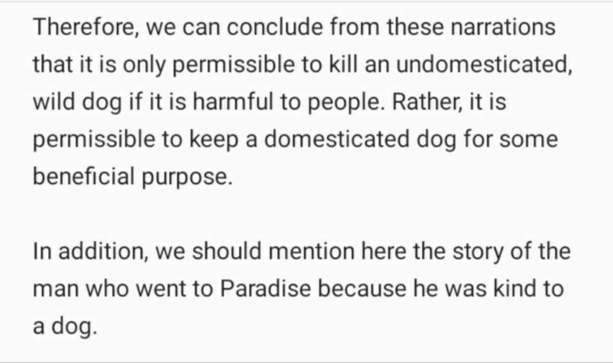

An nawawi quotes in Sharh Sahih muslim (10/340): “the imam of the haramain said in killing that is innocent the prophet first ordered to kill them all (because the danger) and then it was abroagated to only the black one then at the end the shar’ia is on the impermissiblity of killing of killing what is innocent even it is a black one or else”
https://www.youtube.com/watch?v=cZeh1w10WtA&ab_channel=AllegationHunter%5BIIP%5D
https://discover-the-truth.com/2016/12/06/muhammed-a-mercy-analysing-dogs-killed-in-madinah/
Ibn Qutaybah said in the interpretation of various hadith: Dogs are not without being a nation of the nations of the seven, or a nation of the jinn ... And these things are not realized by looking, measuring and minds, but rather ending in them what the Prophet (may Allah's peace and blessings be upon him) said ... And we have no stop and no shortage of dogs being seven, jinn, or mutated.
If it is from the sevenfold, then he ordered the killing of lions from her, and said: "He is a devil"; because the gloomy lions from them harmed and deprived her, and the dog (meaning rabies) to him is faster than to collect it, and he is nevertheless the least useful and worst guarded, the farthest
He said: "He is a devil" he wants: that he malices her, as so-and-so is said to be a devil.. It is meant to be similar to that.
And if the dogs are from the jinn, or they were obseated from the jinn, then he wanted the black ones to be their devil, so kill him for his harm, and the devil is: Mard the jinn. And the jinn are the weak
Ibn abdul bar said:
والذي أختاره في هذا الباب أن لا يقتل شيء من الكلاب إذا لم تضر بأحد، ولم تعقر أحدا
And from I adhere to in that topic is that nothing is killed from the dogs if they don’t harm anyone and didn’t attack anyone.
[At-Tamhid 14/233]